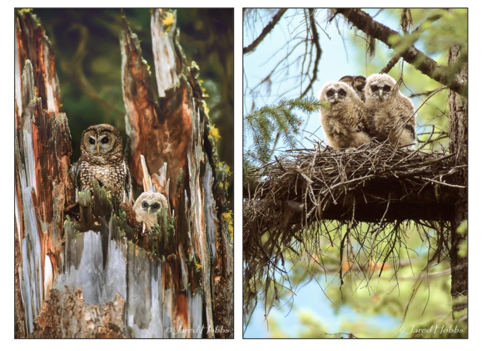
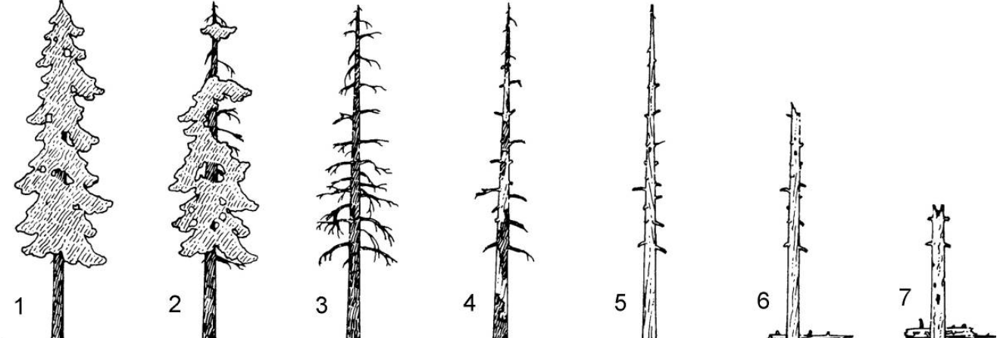
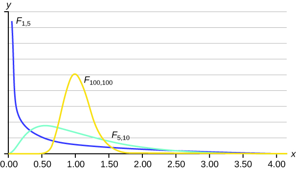

source("lab_02_tests.r")
df = read.csv('../datasets/Lab_02_nestingTrees.csv')GEOG 374: ANOVA - Nesting Tree Characteristics of the Northern Spotted Owl
- Authors: Hewitt Lab (Kevin Pierce, Nina Hewitt and Micheal Jerowsky) \(\times\) COMET Team (Charlotte White, and Jonathan Graves)
- Last Update: 9 September 2023
This module has a suggested citation of:
Pierce, K., Hewitt, N., Jerowsky, M., 2023. Interactive Notebooks for Statistics and Computation in Geography: Nesting Tree Characteristics of the Northern Spotted Owl. In Adshade et al. 2023. The COMET Project: Creating Online Materials for Econometrics Teaching. https://comet.arts.ubc.ca/.
Outline
Prerequisites
- Introduction to Jupyter
- Introduction to R
- Introduction to Data
Outcomes
After completing this notebook, you will be able to: * Explore data to gain a better understanding of its content and structure. * Determine unique values of data, common values, and calculate the coefficient of variation. * Visualize data using a boxplot. * Conduct an analysis of variance (ANOVA) and post-hoc Tukey test.
References
Introduction
In this lab, we will apply descriptive statistics, analysis of variance (ANOVA), and the Tukey post-hoc test to determine the types of trees that northern spotted owls prefer for nesting.
The northern spotted owl is under extreme pressure in British Columbia due to forestry activities and competition from the barred owl, which only recently migrated to the area. Only six wild owls have been confirmed to remain in BC, located exclusively within old growth forest in the lower Fraser Basin. This is thought to represent a decline of around 99% from their precolonial numbers. The BC government is attempting to protect remaining owl habitat and increase owl numbers through a captive breeding and release program.
The image below shows northern spotted owls (2 adults and 3 juveniles) in two different types of nests. The left panel is a “top cavity” nest, while the right panel is a “platform” nest.

The number of owls in Washington, Oregon, and California is much higher than in BC. In these regions, the owls are considered threatened (as the population is low and decreasing), but not endangered. To identify potential northern spotted owl habitat for protection from harvesting or barred owl colonization, it is necessary to characterize the features of ideal nesting trees for northern spotted owls.
Data
We will use a dataset that includes characteristics of nearly 2000 spotted owl nesting trees in Oregon, Washington, and California.
To begin, let’s import our data and save it as a variable called df.
These data contain values for: * Site: The location where the nest was observed. “Olympic” – Olympic Peninsula, “Interior” – within the rain shadow of the Cascade mountain range, “CoastN” – Northern coast of Wa. and Northern Or., and “Coast S” – Southern coast of Southern Or. and Northern Ca.
Nest: The type of nest. “TopCavity” – a nest within the hollowed out cavity at the top of a broken tree, “SideCavity” – a nest within a cavity on the side of a tree, and “Platform” – a nest perched on the limbs of a tree.
DBH: The diameter at breast height of the nesting tree in centimeters.
Ht: The height of the nesting tree in meters.
Stage: The life stage of a tree on a scale between 1 and 7. Values of 1-2 represent living trees while 3-7 represent dead trees in progressive decay. The image below indicates the meaning of
Stage. For Douglas-fir and western red cedar trees, stage 2 often represents trees of order of 500-1000 years old.

Part 1: Key Concepts
One-Way Analysis of Variance (ANOVA)
A one-way ANOVA is used to determine if there is a statistically significant difference between three or more groups. This statistical test looks at the overall variability of data values in order to compare the equality of means. However, there are some basic assumptions that must be fulfilled before using this hypothesis test: * The populations from which the sample groups are taken are assumed to be normal. * Samples are randomly selected and independent. * The populations are assumed to have equal standard deviations (or variances).
Example: A researcher is interested in different approaches to weight loss and would like to determine if there is a difference between three different diets (ketogenic, low-carb and paleo). In order to test this, they randomly assign a group of 60 people to the three diets of interest and track their overall weight loss over a six-month period. The dependent variable is weight loss in this study, and the independent variable is diet type. The null hypothesis is that there is no difference between means of the three diet groups, and the alternative hypothesis is that there is a difference between at least two groups in the study. So long as the three fundamental assumptions listed above are met, a one-way ANOVA would be appropriate to use in this case.
ANOVA is used to test general, rather than specific differences between means. That is, it tests if a difference exists between groups, but cannot tell us which pairs of groups have differences between them. As such, the null hypothesis is: \(Ho: \mu_1 = \mu_2 = \mu_3\). Meanwhile, the alternative hypothesis is: \(Ha: \mu_i \neq \mu_j\) for some \(i \neq j\).
The test is conducted by computing an F-statistic and comparing it against a critical value determined using the F-distribution. The F-statistic is a ratio of the mean square variance between groups and within groups:
\(F = \frac{MS_{between}}{MS_{within}}\)
If there is no difference between the groups being tested, then the between-group variance and the within-group variance will be roughly equal and thus a value close to 1 would be expected. For an explanation of how to compute this test statistic by hand, please consult this resource by openstax.
The F-distribution is a family of curves based on the degrees of freedom (df) of the variance of the numerator, and the df of the denominator:

The distribution has some key properties: * The curve is skewed to the right. * There is a different curve for each set of dfs. * The F-statistic is always greater than or equal to zero. * As the degrees of freedom for the numerator and for the denominator get larger, the curve approximates the normal.
If your computed F-statistic is greater than the F-critical value determined from the F-distribution table, then you have found a statistically significant result and at least one group differs significantly from another group based on your chosen alpha level. We will be conducting ANOVA using r and the F-statistic will be calculated along with a p-value associated with it. In the case of conducting an ANOVA in r, if the p-value is below an assumed \(\alpha\) of .05, you can reject your null hypothesis. However, if you are conducting a one-way ANOVA by hand, please consult an F-distribution table to determine your critical value.
In r, the function for ANOVA is aov(y~x,data=dataset) where * y=independent variable * x=dependent variable * datasetshould be replaced with the name of the variable storing your data.
Store your ANOVA as a variable, and summarize it using the summary() function.
Post-hoc Tukey Test
Tukey’s Honest Significant Difference (HSD) test is a post-hoc test that is commonly used to determine differences between pairs of group means following an ANOVA. As discussed, ANOVA does not determine which groups a significant difference exists between. The Tukey test is used to determine this through pairwise comparisons.
In r, you can conduct a post-hoc Tukey test using the TukeyHSD() function, referencing the variable you saved your ANOVA as.
To analyze its output, assume an \(\alpha\) of .05. If the p-value associated with each pairwise comparison is below .05, a statistically significant difference exists between those two groups.
Part 2: Lab Exercises
Exercise 1: Descriptive Statistics
First we will compute descriptive statistics to determine which species of tree northern spotted owls prefer to nest in.
A) Investigate the dataframe using head and tail to view its structure, headings, and the total number of records.
head(df)
tail(df)Question 1: How many records are in this data set?
answer_1 <- # your answer here
test_1()B) You can find the unique tree species using the function unique after selecting the Tree column from df.
species = unique(df$Tree)
speciesQuestion 2: How many unique species of trees are there?
answer_2 <- # your answer here
test_2()C) Determine the most common tree species for owls to nest in. Assign this species to a variable called commonTree, and then calculate the percentage of all nests that are in this tree species. Assign this percentage to a variable called percentTree. You can apply the function table(x) to count unique occurrences in a vector x. You can drop the name attribute from a table T with unname(T).
x = table(df$Tree)
xcommonTree = 'DouglasFir' #assign the species 'DouglasFir' to the variable 'commonTree'
percentTree = unname(x[1]/sum(x)*100) # calculate the percentage and drop the name. Here,'x[1]' indicates the first value in table 'x'
percentTreeQuestion 3: What percentage of all nests are in the most common tree species? Please round your answer to 2 decimal places.
answer_3 <- # your answer here
test_3()D) Select the rows within df that correspond to the most common tree species for owl nesting and include these in a new dataframe df1. Using df1, calculate the mean diameter at breast height (DBH) and its standard deviation. Assign these values to variables meanDBH and sdDBH respectively. Similarly obtain the mean tree height (Ht) and its standard deviation, and assign these values to meanHt and sdHt.
mask = df$Tree==commonTree
df1 = subset(df,mask)
meanDBH = mean(df1$DBH)
sdDBH = sd(df1$DBH)
meanHt = mean(df1$Ht)
sdHt = sd(df1$Ht)Question 4: (1) What is the mean DBH of the common tree? (2) What is the standard deviation for the height of the common tree? Please round your answers to 2 decimal places.
answer_4.1 <- # your answer here for DBH
answer_4.2 <- # your answer here for tree height
test_4.1()
test_4.2()E) Calculate the coefficient of variation for both tree height and diameter for the most common tree species. Assign these to variables cvHt and cvDBH respectively. Don’t forget to call the objects to view their values.
cvDBH = meanDBH/sdDBH
cvHt = meanHt/sdHtQuestion 5: Are tree diameters more variable than tree heights (‘yes’ or ‘no’)? Please do not capitalize your answers.
answer_5 <- '' # your answer here ('yes' or 'no')
test_5()F) Determine the most common stage of decay among trees which owls build nests in. Assign this answer (as an integer between 1 and 7) to the variable commonStage. Determine the percentage of common trees in this stage of decay.
x = table(df$Stage)commonStage = 2
percentStage = unname(x[2]/sum(x)*100)Question 6: What percentage of common trees are in this stage of decay? Please round your answer to 2 decimal places.
answer_6 <- # your answer here
test_6()G) Determine the most common nest type. Assign the most common nest type to a variable called commonNest. Determine what percentage of all nests in the dataset are this nest type and name this to a variable called percentNest.
x = table(df$Nest)commonNest = 'TopCavity'
percentNest = unname((x[3])/sum(x)*100)Question 7: What percentage of all nests in the dataset are of the most common type? Please round your answer to 2 decimal places.
answer_7 <- # your answer here
test_7()H) Summarize your results. What species of trees do northern spotted owls prefer to nest in? What life stage are their preferred trees in? What types of nests do owls most commonly build in these trees?
Write your answer here
Exercise 2: Analysis of Variance (ANOVA)
Now we will investigate whether the diameter and height of nesting trees affect the types of nests owls make in them using analysis of variance (ANOVA).
A) For the most common nesting tree species (Tree) and life stage (Stage), form a boxplot showing the tree diameter on the y-axis versus the nest type on the x-axis. Label your axes with units as appropriate. Add a plot title. You can extract the appropriate data from df with the subset function using mask = (df$Stage==commonStage) & (df$Tree==commonTree). You can use boxplot(y ~ x, data=yourDataFrame, main='a title for your plot', xlab='your x-axis label', ylab='your y-axis label', col 'lightblue') with appropriate substitutions to visualize your data.
mask = (df$Stage==commonStage) & (df$Tree==commonTree)
df2 = subset(df, mask)
boxplot(DBH~Nest,
data=df2,
main='Tree diameter versus nest type: Douglas firs in life stage 2',
xlab='Nest Type',
ylab='Tree DBH [cm]',
col='lightblue')Question 8: Upon visualizing the data using boxplots, does the data meet the requirements of an ANOVA (‘yes’ or ‘no’)?
answer_8 <- '' # your answer here ('yes' or 'no')
test_8()B) Determine the null and alternative hypotheses for our test using what we have learned so far.
Question 9: Which of the following corresponds to the correct null and alternative hypotheses?
\(Ho: \mu_1 = \mu_2 = \mu_3\); \(Ha: \mu_1 \neq \mu_2 \neq \mu_3\)
\(Ho: \mu_1 \neq \mu_2 \neq \mu_3\); \(Ha: \mu_1 = \mu_2 = \mu_3\)
\(Ho: \mu_1 = \mu_2 = \mu_3\); Ha: \(\mu_i \neq \mu_j\) for some \(\mu_i \neq \mu_j\).
\(Ho: \mu_i = \mu_j\); \(Ha: \mu_i \neq \mu_j\).
answer_9 <- '' # your answer here ('A', 'B', 'C', or 'D')
test_9()C) Conduct an ANOVA on the data visualized in your boxplot. The function for ANOVA is aov. It operates as A = aov(y~x,data=dataset) with appropriate subsitutions. As written here, the ANOVA results are stored in A. You can summarize the results with summary(A).
A = aov(DBH~Nest,data=df2) #perform an ANOVA and name it 'A'
summary(A)Question 10: (1) What is the p-value associated with your ANOVA? Please round to 2 decimal places. (2) Should you reject your null hypothesis (‘yes’ or ‘no’)? Please do not capitalize your answers.
answer_10.1 <- # your answer here
answer_10.2 <- '' # your answer here ('yes' or 'no')
test_10.1()
test_10.2()D) Summarize the results of your ANOVA using several sentences. Think about what this statistical test is actually implying about tree diameters and the type of nests that these owls construct.
Write your answer here
E) Conduct a post-hoc Tukey test on the ANOVA output using the TukeyHSD() function. Each row of the Tukey output compares tree diameters between a pair of nest types. If p adj < 0.05 for this row, the tree diameters are different for this pair of nest types.
TukeyHSD(A)Question 11: How many pairwise comparisons were statistically significant?
answer_11 <- # your answer here
test_11()F) Perform an ANOVA to determine if nest type (Nest) is related to tree height (Ht) for the most common nesting tree species and life stage (the df2 dataframe). Summarize your results as in the previous ANOVA.
B = aov(Ht~Nest,data=df2) #perform and ANOVA and name it 'B'Question 12: (1) What is the p-value associated with your ANOVA? Please round to 2 decimal places. (2) Should you reject your null hypothesis (‘yes’ or ‘no’)?
answer_12.1 <- # your answer here
answer_12.2 <- '' # your answer here ('yes' or 'no')
test_12.1()
test_12.2()Question 13: In 2-3 sentences, summarize your findings with regard to (i) the characteristics of trees that northern spotted owls select for nesting, (ii) the types of nests these owls most commonly build in these trees, and (iii) how ANOVA informs the control of tree height and diameter on the types of nests owls construct.
Write your answer here